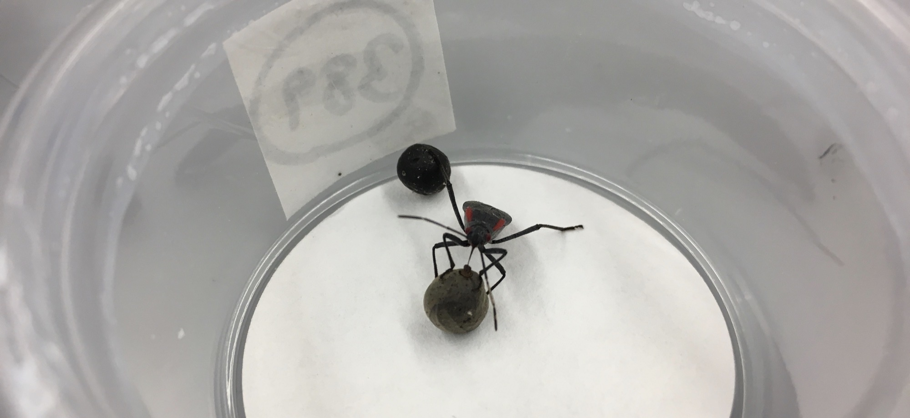
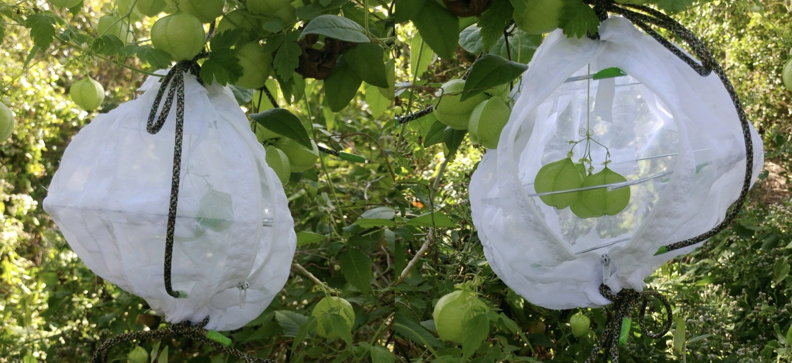

1 / 3

modeling past and ongoing adaptations to human-induced rapid environmental change
2 / 3

in the lab
3 / 3

and the field
We research how populations respond, both genetically and via plasticity, to human-induced rapid environmental change. We use field- and lab-based experiments, long-term observational studies, and theory.
We value and practice intellectual integrity, collaboration, and diversity of thought. We behave respectfully, professionally, and safely to all lab members regardless of race, identity, class, gender, or sexual orientation. As a laboratory, we recognize that research is a fundamentally human endeavor that improves when we identify and question how the history of our fields, institutions, and selves have impacted our science. We believe research is a powerful tool that continues to shape the way we view and understand the world. In turn, we acknowledge our responsibility for the impact of our science and seek to give others our discoveries.
We thank our institutions and sponsors who make our research possible.
Cenzer Lab | University of Chicago
© 2020 | By Anastasia Bernat